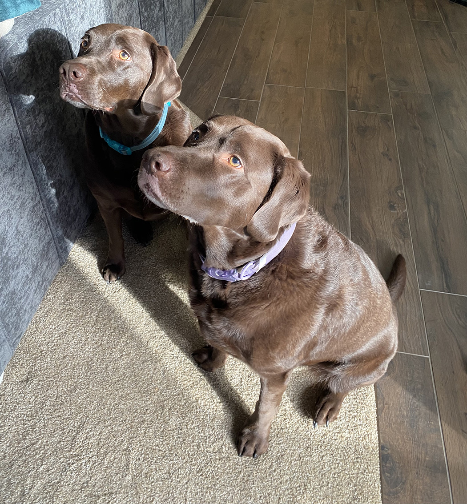

About Me
Hi, my name is Ashleigh Parker. I’m a part time photographer or you could say I like to do photography as a loving hobby. My love for photography stems from my dad. He is a military veteran and growing up we lived overseas for about 10 years. While over there he started teaching himself how to take photos manually and anywhere we went would take a thousand photos. My parents got me my first camera which was automatic when we were overseas, and I would follow my dad copying what he was doing. I loved capturing those memories and it made me want to keep doing that throughout life.
One Christmas my parents got me my first manual camera. This gave me a chance to learn how to take more advanced photos. When I got into high school, I got a chance to take a photography class which I enjoyed, and it taught me even more about my camera. I found that my favorite photos to take were nature and still life shots. Once I got out of high school, I took a year off to try and figure out what I wanted to do. I decided to go for my general credits and then started going for an associate in photography. I met some amazing people and learned more about the process of taking photos in a studio. I struggled a little coming up with concepts also, I don’t enjoy portrait or photos that have to do with people. With this struggle I decided to have photography as a hobby instead of a career.
Today I still love to take photos, capturing memories every day. I would love to do more of it, but life can get in the way sometimes. I’m very family oriented and my parents are my best friends. I love to travel and have a bucket list of places I want to see. My two chocolate labs are a big part of my life. Photography is a love of mine and I hope everyone enjoys my photos. Contact me if you’re interested in any of them or would like some photos taken.
